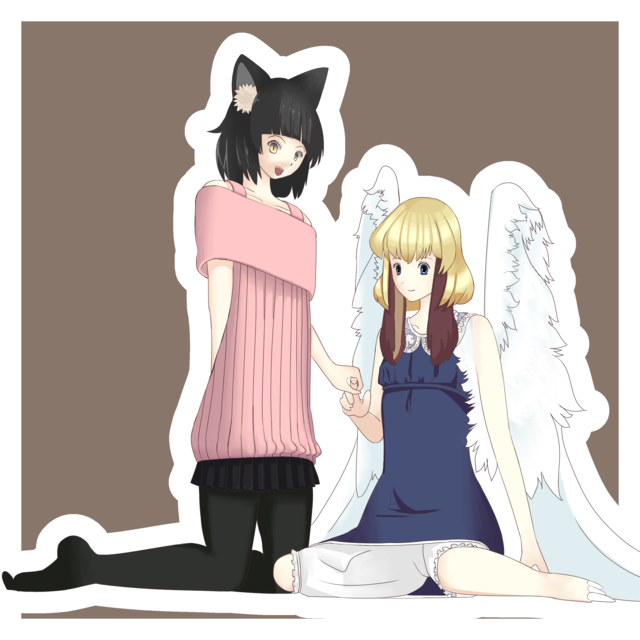

ドールをつくった¶
昨日， @haru2036 に，秋葉原でドールの作り方とか 必要な材料とかいろいろと教えてもらった．前々から興味はあったのだけど，なにを買えばいいか わからないし，やり方もわからないので，手を出していなかったのだ．そこで彼に案内してもらい この界隈に入門した．
必要な材料は，まず素体，各種衣装，それに，植毛ヘッド，絵の具， Liquitex という絵の具， 筆，アクリル溶剤，つや消し，それから，ネコミミを自作するために， カチューシャと布，小さなハサミ，ピンセット，セメダイン．
アイペイントの HOWTO 本を買い，ドールの目やら眉やら口やらを描いた． 髪を切り，ネコミミをつくった．それから最後に服を着せてあげたら完成．
具体的な工程や詳細は記録していないので忘れた．ともかく完成品がこれだ． 背景の本は，それをおかないとうまく色が映らなかったのでおいてある．

ちなみに，キャラクターはフィーム・ユサクトンというオリジナルキャラクターだ． 当然みんなは知らないだろうが，ぼくの中ではイラストを描いたり小説を描いたりして それなりに愛着のあるキャラクターだ．
次のイラストの左側のキャラクターのことだ．
